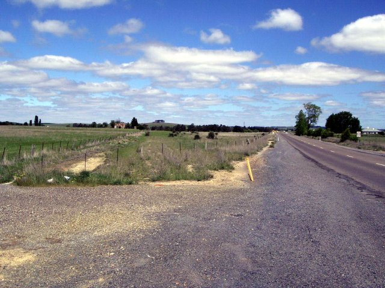
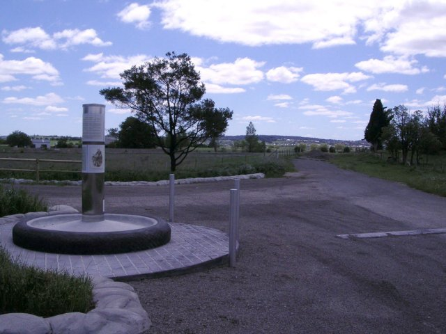
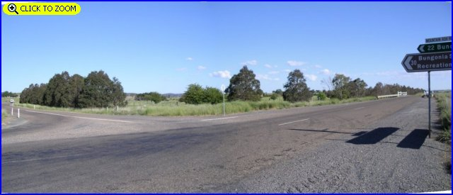
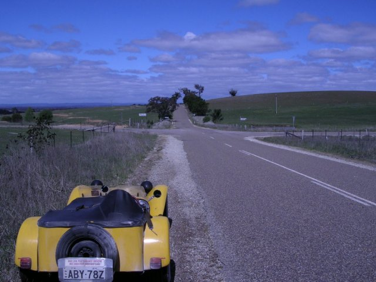

Numbers on the map represent the location where the photographs were taken. Scroll down to view the photographs.
Goulburn-Windellama-Bungonia - Photographs #1 to #7
|| Contents || Photo's 1-7 | Photo's 8-14 | Photo's 15-20 | Photo's 21-25 || Home ||
Numbers on the map represent the location where the photographs were taken. Scroll
down to view the photographs.
Return to racingcircuits.net's Photo Archive Main Index

1 - Start Finish Area. The old road alignment is between the yellow post
and the fence on the left down to the old builing. The Goulburn bypass road is 300 metres
behind here.

2 - Memorial Park. The old road can be seen going right, back up to the
start/finish area.

3 - Present day intersection. Left turn to Windellama. [Click here to zoom in]
Note - All distances quoted are from here.

4 - Road realignment. Travel coming down the hill. (16.2km)
5 - Road realignment. (20.9km)

6A - Old Road, coming towards camera. (22.0km)
6B - 180° from previous photo. (22.0km)

7 - Crossroads (26.5km)
Photographs and Text ©Neil Fackerell. Reproduced here with kind permission.